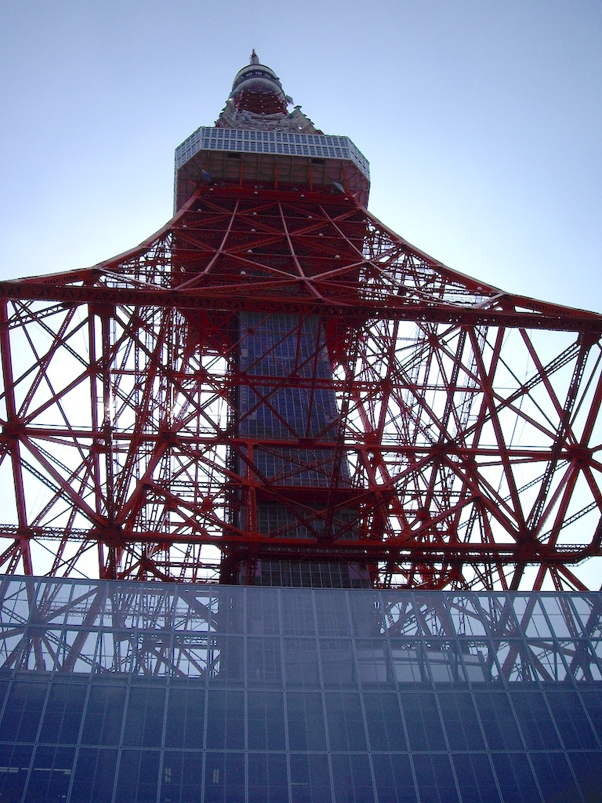
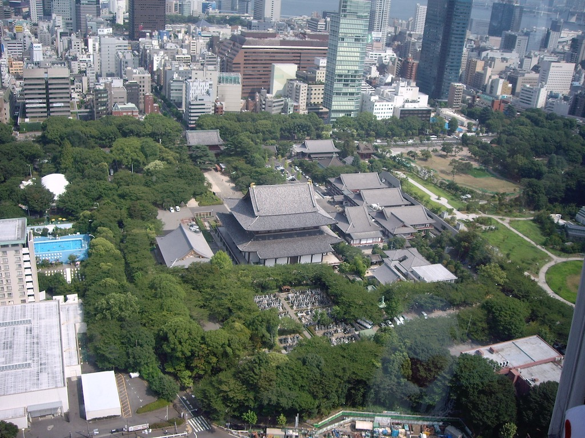
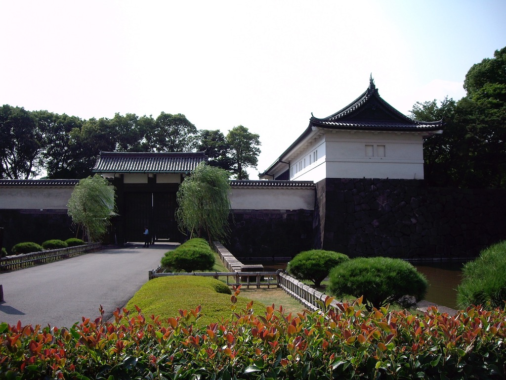
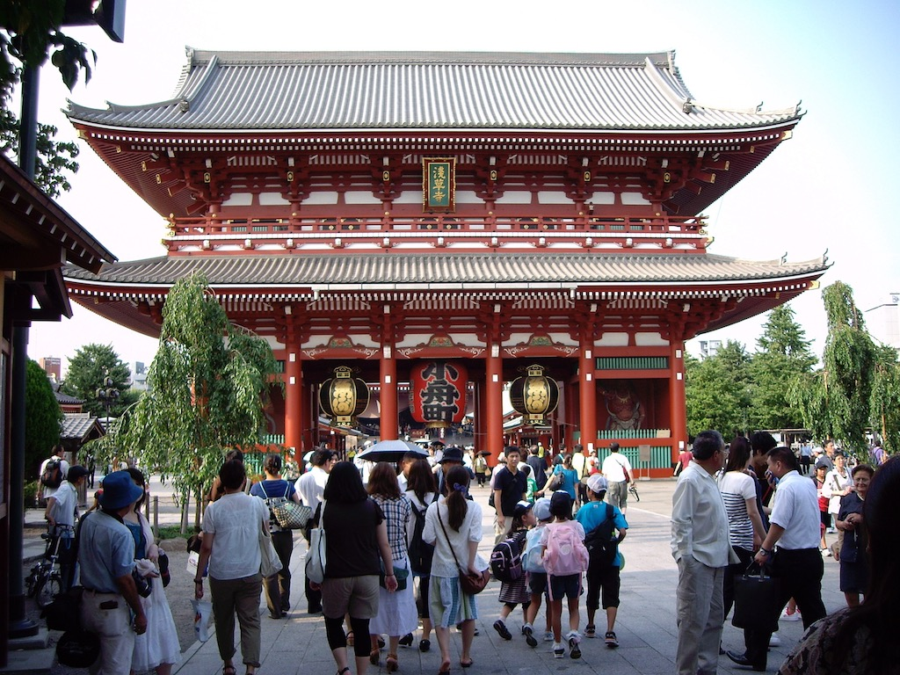
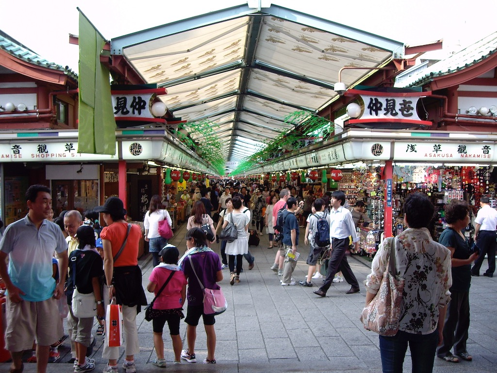
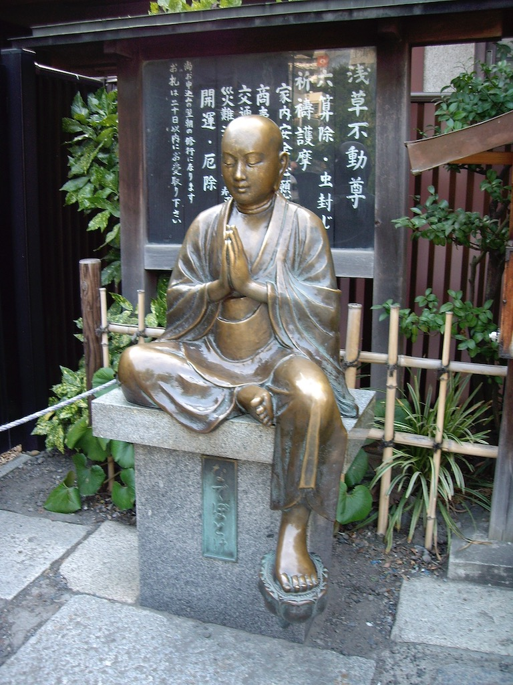
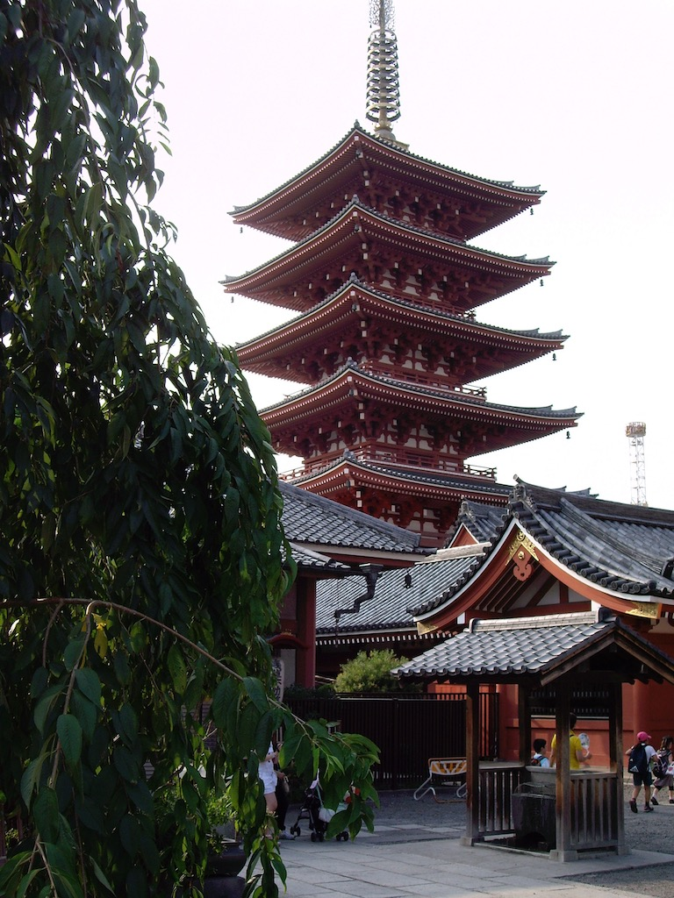
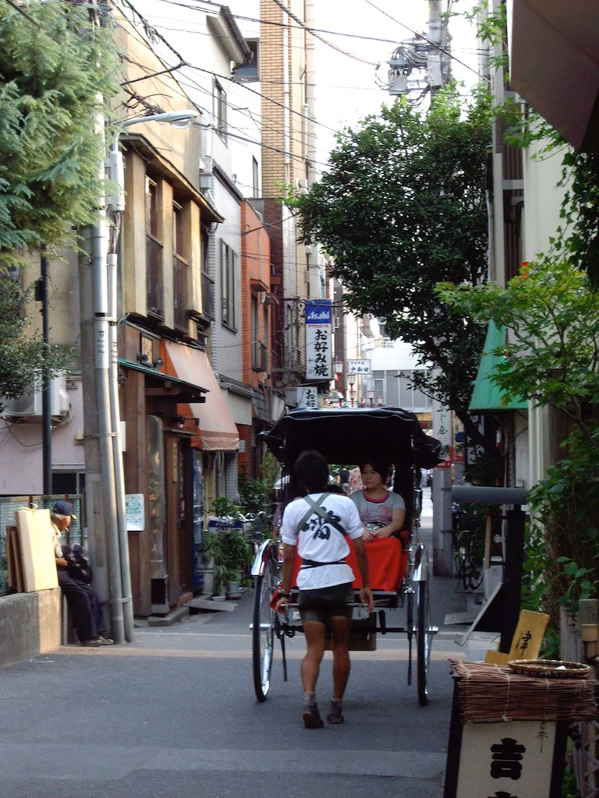

Travelling on business involves airports, taxis, hotels and offices. Rarely is there a chance to explore the locality or see the sights. However, during a trip to Tokyo I built one free day into my schedule, with the aim of walking around the tourist sites in the city centre. You know what happens to ‘best laid plans’; I was asked to give another presentation that took half my free day! To counter this, a Japanese colleague offered to escort me around Tokyo, using taxis and trains where necessary to shorten the journey times. Since this autumn was one of the hottest that Japan had experienced, less walking in the sun was a good idea.
From our office window I could see Tokyo Tower, a radio mast looking like a small version of the Blackpool tower, painted red and with an observation platform half way up. We started there, with a view to having some lunch before ascending. Being steered towards a western-style fast food outlet, I asked what my colleague would normally eat for lunch. Noodles; one of Japan’s fast foods! And just around the corner was a noodle ‘cafe’ where we slurped sorba noodles that we dipped in a soya-based broth, using chopsticks of course and surrounded by Japanese families. The view from the gallery was less impressive, since the modern tower blocks obscure views of any historic buildings, although amongst the concrete and glass are islands of green that are Buddhist temples and cemeteries.
Another taxi ride took us to the Imperial Palace, which was closed to the public, being a Friday. However, I did see the changing of the Imperial Guard. Formal and ritualised, but not a patch on Buckingham Palace!
Just as I was surprised to see direction signs around Tokyo written in both Japanese and Latin script, so I was surprised to find that information on the metro trains was also presented in English. So I had some idea of our whereabouts as we journeyed to the Asakusa district to see the Sensoji temple. It is the oldest Buddhist temple in Tokyo and you reach the entrance through market stalls that sell tourist paraphernalia, but for Japanese tourists. So I ate traditional sweets that were being made behind the counter of a stall, rubbed the back of a bronze Buddha to help ease my aching back and marvelled at the decoration within the temple building.
 My colleagues in Tokyo had been very hospitable, taking me to some fine, traditional restaurants, but my meal that evening was perhaps the most interesting. My colleague took me to a back-street bar. It seems that bars serve small dishes of food and you order one when you feel peckish, between drinks! The food was more basic, but delicious.
The only difficulty during my visit to Tokyo was my journey from Asakusa. I was put into a taxi with a driver who did not speak any English and who did not know how to find my hotel!
© David James 2020 Last updated: 19th January 2020